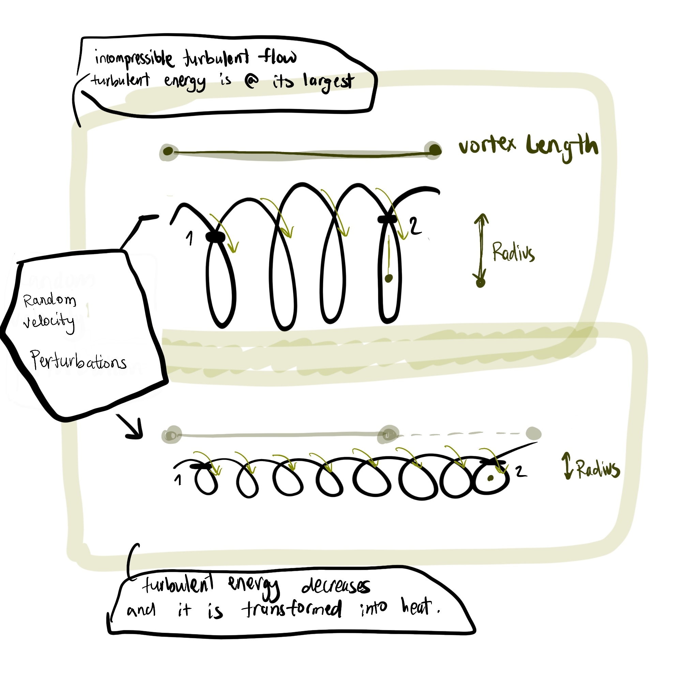

Vorticity is the curl of velocity. It is a measure of the local rotation of a fluid element. The vorticity vector is defined as:
\begin{equation}
\vec{\omega} = \nabla \times \vec{v}
\end{equation}
\begin{equation}
\begin{bmatrix}
\hat{i} & \hat{j} & \hat{k}\\
\frac{\partial}{\partial x} & \frac{\partial}{\partial y} & \frac{\partial}{\partial z}\\
u & v & w
\end{bmatrix}
\rightarrow
\vec{\omega} = (\frac{\partial w}{\partial y} - \frac{\partial v}{\partial z}, \frac{\partial u}{\partial z} - \frac{\partial w}{\partial x}, \frac{\partial v}{\partial x} - \frac{\partial u}{\partial y})
\end{equation}
\begin{equation}
\vec{\omega} = (\frac{\partial w}{\partial y},-\frac{\partial w}{\partial x},\frac{\partial v}{\partial x} - \frac{\partial u}{\partial y})
\end{equation}
\begin{equation}
\begin{aligned}
\omega_x &= \frac{\partial w}{\partial y} = \mathcal{O}(\frac{W}{L}) = \mathcal{O}(\frac{\delta U}{L}) \\
\omega_y &= -\frac{\partial w}{\partial x} = \mathcal{O}(\frac{W}{L}) = \mathcal{O}(\frac{\delta U}{L}) \\
\omega_z &= \frac{\partial v}{\partial x} - \frac{\partial u}{\partial y} = \mathcal{O}(\frac{U}{L})
\end{aligned}
\end{equation}
Horizontal components \(w_x,w_y\) of relative vorticity are \(\mathcal{O}(\delta)\), smaller than vertical component \(w_z\).
Let's define the normal component of the relative vorticity as:
\[\zeta = \omega_z = \frac{\partial v}{\partial x} - \frac{\partial u}{\partial y}\]
\begin{equation}
\begin{aligned}
&1.\begin{aligned}
&\frac{\partial }{\partial y}(\frac{\partial u}{\partial t}+u \frac{\partial u}{\partial x}+v \frac{\partial u}{\partial y}-fv) = \frac{\partial}{\partial y}(-g \frac{\partial h}{\partial x})\\
&\frac{\partial^2 u }{\partial y \partial t}+\frac{\partial}{\partial y}(u\frac{\partial u}{\partial x})+\frac{\partial}{\partial y}(v \frac{\partial u}{\partial y}) -\frac{\partial}{\partial y}(fv) = -g \frac{\partial^2 h}{\partial x \partial y} \\
&\frac{\partial^2 u}{\partial t \partial y}+ \frac{\partial u}{\partial y}\frac{u}{x}+ u \frac{\partial^2 u}{\partial x \partial y} + \frac{\partial v}{\partial y}\frac{\partial u}{\partial y}+v^2\frac{\partial^2 u}{\partial y^2}-f \frac{\partial v}{\partial y} = -g \frac{\partial^2 h}{\partial x \partial y}
\end{aligned}
\\[1cm]
&2.\begin{aligned}
&\frac{\partial}{\partial x}(\frac{\partial v}{\partial t}+ u \frac{\partial v}{\partial x}+v \frac{\partial v}{\partial y}+fu) = \frac{\partial}{\partial x}(-g \frac{\partial h}{\partial y})\\
&\frac{\partial^2 v}{\partial x \partial t}+\frac{\partial}{\partial x}(u \frac{\partial v}{\partial x})+\frac{\partial}{\partial x}(v \frac{\partial v}{\partial y})+\frac{\partial}{\partial x}(fu) = -g \frac{\partial^2 h}{\partial y \partial x}\\
&\frac{\partial^2 v}{\partial x \partial t}+\frac{\partial u}{\partial x}\frac{\partial v}{\partial x}+u \frac{\partial^2 v}{\partial x^2}+\frac{\partial v}{\partial x}\frac{\partial v}{\partial y}+v \frac{\partial^2 v}{\partial x \partial y}+f \frac{\partial u}{\partial x} = -g \frac{\partial^2 h}{\partial y \partial x}
\end{aligned}
\end{aligned}
\end{equation}
Subtracting 1 from 2:
\begin{equation}
\begin{aligned}
& \frac{\partial^2 v}{\partial t \partial x} - \frac{\partial^2 u}{\partial t \partial y} + u \frac{\partial }{\partial x}(\frac{\partial v}{\partial x} - \frac{\partial u}{\partial y}) + v \frac{\partial}{\partial y}(\frac{\partial v}{\partial x}- \frac{\partial u}{\partial y}) = -f (\frac{\partial v}{\partial y}+\frac{\partial u}{\partial x}) - (\frac{\partial v}{\partial x}-\frac{\partial u}{\partial y})(\frac{\partial u}{\partial x}+\frac{\partial v}{\partial y})\\
&\frac{\partial \zeta}{\partial t} + u\frac{\partial \zeta}{\partial x}+v\frac{\partial \zeta}{\partial y} = -(\zeta +f)(\frac{\partial u}{\partial x}+\frac{\partial v}{\partial y}) \\
&\text{Hence:}\\
&\boxed{\frac{D \zeta}{Dt} = \frac{\partial \zeta}{\partial t} + u\frac{\partial \zeta}{\partial x}+v\frac{\partial \zeta}{\partial y} = -(\zeta +f)(\frac{\partial u}{\partial x}+\frac{\partial v}{\partial y})}
\end{aligned}
\end{equation}
Absolute vorticity:
\[\mu = \zeta + f\]
where \(f\) is the Coriolis parameter which is planetary vorticity, \(f= 2 \Omega \sin\theta\). Change in absolute vorticity is only allowed if there is finite horizontal divergence, vertical stretching, spinning, squashing of the columns.
Using the equation continuity equation(22) rewrite (7) as:
\begin{equation}
\frac{D \zeta}{Dt} = \frac{\zeta +f}{H}\frac{DH}{Dt}
\end{equation}
This equation expresses the same result as before but in terms of vortex-tube stretching. This phenomenon is the stretching of a vortex tube due to the divergence of the flow, where the turbulent energy is transfered into smaller scales.
For stretching, \(\frac{DH}{Dt} > 0\), the vorticity \(\zeta\) is intensified by an amount proportional to the product of \(\text{Column Stretching } \times \text{ Absolute Vorticity } (\zeta + f)\). Note: \(\zeta\) can't change by vortex fitting, such mechanism is absent in the columnar motion of shallow-water theory.
One can imagine the vortex stretching as the figure below:

When vortex stretching occurs, the length of the vortex increases. This elongation leads to an increase in the vorticity due to the conservation of angular momentum. The stretching of the vortex filament results in a more intense rotational motion.
Plane Approximation: \(f\)-plane approximation
In the \(f\)-plane approximation, the Coriolis parameter is constant, \(f = f_o= 2\Omega \sin\theta\). The relative vorticity equation becomes:
\begin{equation}
\frac{D}{Dt} (\frac{\zeta +f}{H}) =0
\end{equation}
This statement is for the conservation of shallow-water potential vorticity \(q\):
\begin{equation}
q= \frac{\zeta +f}{H}
\end{equation}
if \(H\) increases, the absolute vorticity increases to keep \(q\) constant. Note that the relative vorticity is generated by column stretching in the field of planetary vorticity f.
Plane Approximation: \(\beta\)-plane approximation
In this approximation, the curvature effects at mid-latitudes are taken into account, and hence the Coriolis parameter, \(f\), changes with latitude:
Assume small deviation \((\theta - \theta_o)\) :
\begin{equation}
\begin{aligned}
f &= 2\Omega \sin(\theta_o + (\theta - \theta_o))\\
&= 2 \Omega \sin\theta_o + 2\Omega \cos\theta_o (\theta - \theta_o)\\
&\text{Arc distance: } y=R(\theta - \theta_o) \rightarrow (\theta - \theta_o) = \frac{y}{R} \\
&= f_o + 2\Omega \frac{y}{R} \cos\theta_o \\
f&= f_o + \beta y
\end{aligned}
\end{equation}
where \(\beta = \frac{2\Omega \cos\theta_o}{R}\) is the rate of change of the Coriolis parameter with latitude. This \(\beta\)-plane effect causes changes in parcel vorticity, resulting in a skating motion around the equator, moving east or west, which leads to the formation of Rossby waves.
Scaling \(\beta\)
Recall the scales: \(L\) length, \(T\) time, \(U\) horizontal velocity, \(f_o\) Coriois parameter, and \(N_o\) free surface deviation.
Define the following notation:
\begin{equation}
H = H_o (x,y) + \eta = D- h_B(x,y) + \eta
\end{equation}
where \(D\) is the scale depth of the ocean, \(h_B\) is the bottom topography which produces a departure of \(H_o\), and \(\eta\) is the free surface deviation.
From the equation (12)
\begin{equation}
\beta = \frac{df}{dy}
\end{equation}
Assuming that the variations of the Coriolis parameter are small, rewrite the equation (14) as:
\begin{equation}
|\beta L | \leq |f_o|
\end{equation}
Recognize the smallness of \(\beta\) compared to \(\frac{f_o}{L}\), by letting:
\begin{equation}
\beta = (\frac{U}{L^2})\beta'
\end{equation}
Scaling \(f\)
To scale \(f\), the Coriolis parameter, divide it by the characteristic \(f\):
\begin{equation}
\begin{aligned}
f' &= \frac{f}{f_o} = \frac{f_o + \beta y}{f_o}\\
&= 1+ \frac{U\beta' y}{L^2 f_o} \\
&= 1+ \frac{U}{f_o L} \frac{y}{L}\beta' \\
f' &= 1+ R_o \beta' y'
\end{aligned}
\end{equation}
Scaling the Shallow-Water equations interms of \(N_o\)
The shallow-water equations continuity equation(22) proved before:
\begin{equation}
\begin{aligned}
&\frac{\partial u}{\partial t} + u \frac{\partial u}{\partial x}+v \frac{\partial u}{\partial y}- fv = -g \frac{\partial h}{\partial x} \\
& \frac{\partial v}{\partial t} + u \frac{\partial v}{\partial x}+v \frac{\partial v}{\partial y}+fu= -g \frac{\partial h}{\partial y} \\
& \frac{\partial H}{ \partial t} + \frac{ \partial (uH)}{\partial x} + \frac{\partial (vH)}{\partial y} =0 \text{ or } \frac{D H}{Dt} + H(\frac{\partial u}{\partial x} + \frac{\partial v}{\partial y}) = 0
\end{aligned}
\end{equation}
Recapping all the scaled variables to facilitate nondimensionalizing the equations:
\begin{equation}
\begin{aligned}
&\bullet x' = \frac{x}{L}, \quad y' = \frac{y}{L}\\
&\bullet u' = \frac{u}{U},\quad v' = \frac{v}{U} ,\quad t' = \frac{t}{T} \\
&\bullet f' = \frac{f}{f_o}, \quad \eta' =\frac{\eta}{N_o}
\end{aligned}
\end{equation}
Substitute the scaled variables into the shallow-water equations:
\begin{equation}
\begin{aligned}
&\begin{aligned}
& \frac{\partial u}{\partial t} + u \frac{\partial u}{\partial x} + v\frac{\partial u}{\partial y} -fv = -g \frac{\partial h}{\partial x} \\
& \frac{\partial (u' U)}{\partial (t' T)} + u' U \frac{\partial (u' U)}{\partial (x' L)} + v' U \frac{\partial (u' U) }{\partial (y' L)} - f' f_o v' U = -g \frac{\partial (\eta' N_o)}{\partial (x' L)}\\
& \frac{U}{T}\frac{\partial u'}{\partial t'} + \frac{U^2}{L}\{u' \frac{\partial u' }{\partial x'} + v' \frac{\partial u' }{\partial y'} \}- f_o U f' v' = -g \frac{N_o}{L} \frac{\partial \eta'}{\partial x'}
\end{aligned}
\\[1 cm]
&\begin{aligned}
&\frac{\partial v}{\partial t} + u \frac{\partial v}{\partial x}+v \frac{\partial v}{\partial y}+fu= -g \frac{\partial h}{\partial y} \\
& \frac{\partial (v' U)}{\partial (t' T)} + u' U \frac{\partial (v' U)}{\partial (x' L)} + v' U \frac{\partial (v' U) }{\partial (y' L)} +f' f_o u' U = -g \frac{\partial (\eta' N_o)}{\partial (y' L)}\\
& \frac{U}{T}\frac{\partial v'}{\partial t'} + \frac{U^2}{L}\{u' \frac{\partial v' }{\partial x'} + v' \frac{\partial v' }{\partial y'} \} + f_o U f'u' = -g \frac{N_o}{L} \frac{\partial \eta'}{\partial y'}
\end{aligned}
\\[1cm]
&\begin{aligned}
&\frac{\partial H}{ \partial t} + \frac{ \partial (uH)}{\partial x} + \frac{\partial (vH)}{\partial y} =0 \\
& \frac{\partial (D-h_B+\eta)}{\partial (t' T)} + \frac{\partial (u'U ((D-h_B+\eta)))}{\partial (x' L)} + \frac{\partial (v' U (D-h_B+\eta))}{\partial (y' L)}=0\\
& \frac{N_o}{T} \frac{\partial \eta'}{\partial t'} + \frac{U}{L} \frac{\partial u'}{\partial x'}(D-h_B+N_o \eta')+\frac{u'U}{L}\frac{\partial (D-h_B+N_o \eta')}{\partial x'}+ \frac{U}{L}\frac{v'}{y'}(D-h_B+N_o \eta')+\frac{v'U}{L}\frac{\partial (D-h_B+N_o \eta')}{\partial y'} =0 \\
& \frac{N_o}{T} \frac{\partial \eta'}{\partial t'} + \frac{U}{L} \{ u' \frac{\partial}{\partial x'} (N_o\eta' -h_B)+v' \frac{\partial}{\partial y'}(N_o \eta' -h_B)\}+ \frac{U}{L}(D-h_B+N_o\eta') (\frac{\partial u'}{\partial x'}+\frac{\partial v'}{\partial y'}) =0
\end{aligned}
\end{aligned}
\end{equation}
Hence, the nondimensional scaled Shallow-water equation:
\begin{equation}
\begin{aligned}
&\frac{U}{T}\frac{\partial u'}{\partial t'} + \frac{U^2}{L}\{u' \frac{\partial u' }{\partial x'} + v' \frac{\partial u' }{\partial y'} \}- f_o U f' v' = -g \frac{N_o}{L} \frac{\partial \eta'}{\partial x'}\\
&\frac{U}{T}\frac{\partial v'}{\partial t'} + \frac{U^2}{L}\{u' \frac{\partial v' }{\partial x'} + v' \frac{\partial v' }{\partial y'} \} + f_o U f'u' = -g \frac{N_o}{L} \frac{\partial \eta'}{\partial y'}\\
&\frac{N_o}{T} \frac{\partial \eta'}{\partial t'} + \frac{U}{L} \{ u' \frac{\partial}{\partial x'} (N_o\eta' -h_B)+v' \frac{\partial}{\partial y'}(N_o \eta' -h_B)\}+ \frac{U}{L}(D-h_B+N_o\eta') (\frac{\partial u'}{\partial x'}+\frac{\partial v'}{\partial y'}) =0
\end{aligned}
\end{equation}
Defining \(N_o\)
We can represent these equations in another form in terms of the Rossby number \(R_o\). In the large scale flows, oceanic and atmospheric, we insist that the motions to be described should be such that, \(R_o = \frac{U}{f_oL} << 1 \). Here the relative acceleration terms are much smaller than the Coriolis acceleration terms by \(\mathcal{O}(R_o)\). In order for \(u',v' \neq 0\), the pressure-gradient terms must be large enough to balance the Coriolis acceleration.
We need to choose the characteristic scale for the free surface elevation \(\eta\):
\begin{equation}
N_o = \frac{f_o U L}{g}= \frac{U}{f_o L} \frac{f_o^2 L^2}{g}= R_o \frac{f_o^2L^2}{g}
\end{equation}
Defining \(L_d\)
The characteristic length scale \(L_d\) is the Rossby deformation radius, which will be defined throught his derivation using (13):
\begin{equation}
\begin{aligned}
H&= D + \eta - h_B\\
&= D(1+ \frac{\eta}{D} -\frac{h_B}{D})\\
&= D(1+ \frac{\eta ' N_o }{D} -\frac{h_B}{D})\\
&= D(1+ \frac{\eta '}{D}\frac{U}{f_o L} \frac{f_o^2 L^2}{g}- \frac{h_B}{D}) \\
&= D(1+\eta' R_o \frac{f_o^2 L^2}{gD} - \frac{h_B}{D})\\
&= D(1+R_o \frac{L^2}{L_d^2} \eta'-\frac{h_B}{D})
\end{aligned}
\end{equation}
Hence,
\begin{equation}
L_d = \frac{(gD)^{\frac{1}{2}}}{f_o}
\end{equation}
Defining \(Fr\)
The Froude number \(Fr\) is square of the ratio of the geometric length scale \(L\) to the Rossby radius of deformation \(L_d\). For convenience we define the Froude number as \(F\):
\begin{equation}
F= (\frac{L}{L_d})^2 = \frac{f_o^2 L^2}{gD}
\end{equation}
Defining \(h_B\)
This term is the bottom topography, and the nondimensional form of \(h_B\) is:
\begin{equation}
h_B = D R_o \eta_B (x,y)
\end{equation}
where the order of magnitude of \(\eta_B\) is \(\mathcal{O}(1)\).
Scaling the Shallow-Water equations in terms of \(R_o\)
For ease of notation, drop the primes in (21)
\begin{equation}
\begin{aligned}
&\frac{U}{T}\frac{\partial u}{\partial t} + \frac{U^2}{L}\{u \frac{\partial u }{\partial x} + v \frac{\partial u }{\partial y} \}- f_o U f v = -g \frac{N_o}{L} \frac{\partial \eta}{\partial x}\\
&\frac{U}{T}\frac{\partial v}{\partial t} + \frac{U^2}{L}\{u \frac{\partial v }{\partial x} + v \frac{\partial v }{\partial y} \} + f_o U fu = -g \frac{N_o}{L} \frac{\partial \eta}{\partial y}\\
&\frac{N_o}{T} \frac{\partial \eta}{\partial t} + \frac{U}{L} \{ u \frac{\partial}{\partial x} (N_o\eta -h_B)+v \frac{\partial}{\partial y}(N_o \eta -h_B)\}+ \frac{U}{L}(D-h_B+N_o\eta) (\frac{\partial u}{\partial x}+\frac{\partial v}{\partial y}) =0
\end{aligned}
\end{equation}
In order to do this transformation, you are required to divide both horizontal momentum equations by \(f_o U\) and the mass-conservation equation by \(\frac{U}{L}\). Here are some useful equations: (25),(26),(22), and (17).
\begin{equation}
\begin{aligned}
&\begin{aligned}
&\bullet \frac{U}{T} \frac{\partial u}{\partial t} + \frac{U^2}{L} \{u \frac{\partial u}{\partial x} + v \frac{\partial u}{\partial y}\} -f_o U f v = -g \frac{N_o}{L} \frac{\partial \eta}{\partial x} \\
&\frac{U}{T f_o U} \frac{\partial u}{\partial t} + \frac{U^2}{Lf_o U} \{u \frac{\partial u}{\partial x} + v \frac{\partial u}{\partial y}\} - \frac{f_o U f v}{f_o U} = -g \frac{N_o}{L f_o U} \frac{\partial \eta}{\partial x} \\
&\frac{U}{f_o L } \frac{\partial u}{\partial t} + \frac{U}{f_o L} \{u \frac{\partial u}{\partial x} + v \frac{\partial u}{\partial y}\} - (1 + R_o \beta y) v = -g \frac{f_o U L}{L f_o Ug} \frac{\partial \eta}{\partial x} \quad \text{where \(L = T U \) , and plug in \(f\) and \(N_o\)} \\
&R_o \frac{\partial u}{\partial t} + R_o \{u \frac{\partial u}{\partial x} + v \frac{\partial u}{\partial y}\} -(1+R_o\beta y)v = -\frac{\partial \eta}{\partial x}
\end{aligned}
\\[1cm]
&\begin{aligned}
&\bullet \frac{U}{T} \frac{\partial v}{\partial t} + \frac{U^2}{L} \{u \frac{\partial v}{\partial x} + v \frac{\partial v}{\partial y}\} +f_o U f u = -g \frac{N_o}{L} \frac{\partial \eta}{\partial y} \\
&\frac{U}{T f_o U} \frac{\partial v}{\partial t} + \frac{U^2}{Lf_o U} \{u \frac{\partial v}{\partial x} + v \frac{\partial v}{\partial y}\} + \frac{f_o U f u}{f_o U} = -g \frac{N_o}{L f_o U} \frac{\partial \eta}{\partial y} \\
&\frac{U}{f_o L } \frac{\partial v}{\partial t} + \frac{U}{f_o L} \{u \frac{\partial v}{\partial x} + v \frac{\partial v}{\partial y}\} +(1 + R_o \beta y) u = -g \frac{f_o U L}{L f_o U g} \frac{\partial \eta}{\partial y} \quad \text{where \(L = T U \) , and plug in \(f\) and \(N_o\)} \\
&R_o \frac{\partial v}{\partial t} + R_o \{u \frac{\partial v}{\partial x} + v \frac{\partial v}{\partial y}\} +(1+R_o\beta y)u = -\frac{\partial \eta}{\partial y}
\end{aligned}
\\[1cm]
&\begin{aligned}
&\bullet \frac{N_o}{T} \frac{\partial \eta}{\partial t}+ \frac{U}{L} \{u \frac{\partial}{\partial x}(N_o \eta -h_B) + v \frac{\partial}{\partial y}(N_o \eta -h_B)\}+\frac{U}{L}(D+N_o \eta -h_B)(\frac{\partial u}{\partial x} +\frac{\partial v}{\partial y}) =0 \\
&\frac{N_o L}{TU} \frac{\partial \eta}{\partial t}+ \frac{U L }{L U} \{u \frac{\partial}{\partial x}(N_o \eta -h_B) + v \frac{\partial}{\partial y}(N_o \eta -h_B)\}+\frac{U L}{LU}(D+N_o \eta -h_B)(\frac{\partial u}{\partial x} +\frac{\partial v}{\partial y}) =0\\
&\frac{R_o L^2 f_o^2 L}{g L } \frac{\partial \eta}{\partial t}+ N_o \{u \frac{\partial \eta}{\partial x} +v \frac{\partial \eta}{\partial y}\}-\{u\frac{\partial h_B}{\partial x} +v \frac{\partial h_B}{\partial y}\}+(D+N_o \eta -h_B)(\frac{\partial u}{\partial x} +\frac{\partial v}{\partial y}) =0 \\
&\text{where \(L = T U \) , and plug in \(f\) and \(N_o\). Note that we can write : \(N_o = R_o F D\), and use the hints given above:} \\
&R_o F D \frac{\partial \eta}{\partial t}+ R_oFD \{u \frac{\partial \eta}{\partial x} +v \frac{\partial \eta}{\partial y}\}-R_o D\{u\frac{\partial \eta_B}{\partial x} +v \frac{\partial \eta_B}{\partial y}\}+D (1+\frac{N_o \eta}{D} -\frac{h_B}{D})(\frac{\partial u}{\partial x} +\frac{\partial v}{\partial y}) =0 \\
&\text{where \(D\) is eliminated}\\
&R_o F \frac{\partial \eta}{\partial t}+ R_oF \{u \frac{\partial \eta}{\partial x} +v \frac{\partial \eta}{\partial y}\}-R_o \{u\frac{\partial \eta_B}{\partial x} +v \frac{\partial \eta_B}{\partial y}\}+(1+R_o F \eta - R_o \eta_B)(\frac{\partial u}{\partial x} +\frac{\partial v}{\partial y}) =0
\end{aligned}
\end{aligned}
\end{equation}
Resulting in the following system:
\begin{equation}
\begin{aligned}
&R_o \frac{\partial u}{\partial t} + R_o \{u \frac{\partial u}{\partial x} + v \frac{\partial u}{\partial y}\} -(1+R_o\beta y)v = -\frac{\partial \eta}{\partial x}\\
&R_o \frac{\partial v}{\partial t} + R_o \{u \frac{\partial v}{\partial x} + v \frac{\partial v}{\partial y}\} +(1+R_o\beta y)u = -\frac{\partial \eta}{\partial y}\\
&R_o F \frac{\partial \eta}{\partial t}+ R_oF \{u \frac{\partial \eta}{\partial x} +v \frac{\partial \eta}{\partial y}\}-R_o \{u\frac{\partial \eta_B}{\partial x} +v \frac{\partial \eta_B}{\partial y}\}+(1+R_o F \eta - R_o \eta_B)(\frac{\partial u}{\partial x} +\frac{\partial v}{\partial y}) =0
\end{aligned}
\end{equation}
Asymptotic Expansion in Rossby number
In this section, we'll examine the orders of magnitude of the various terms in the equations of motion. We can find relationships between terms of like order \(R_o\). If you consider any solution of the Shallow-Water, it will be function of \(x,y,t,R_o\), i.e., \(u(x,y,t,R_o)\). We can expand the solutions of the functions in an asymptotic series in \(R_o\) and that is because the last scaled equations appearred in integral powers. The expansion would look like the following:
\begin{equation}
u(x,y,t,R_o) = u_0(x,y,t) + R_o u_1(x,y,t)+ R_o^2u_2(x,y,t)+\cdots
\end{equation}
where \(u_0,u_1,u_2, \cdots\) are independent of \(R_o\).
The same expansion is done for all functions, plug in the expansion and collect terms of like order in \(R_o\). The leading order terms are the \(O(1)\) terms, the next order terms are the \(O(R_o)\) terms, and so on.
Plug the asymptotic expansions of the functions in (29) Horizontal momentum equations:
\begin{equation}
\begin{aligned}
&\begin{aligned}
& \bullet R_o \frac{\partial(u_0 +R_ou_1 +\mathcal{O}(R_o^2))}{\partial t}+ R_o ((u_0 +R_ou_1 +\mathcal{O}(R_o^2)) \frac{\partial (u_0 +R_ou_1+\mathcal{O}(R_o^2))}{\partial x}\\
&+ (v_0 +R_ov_1 +\mathcal{O}(R_o^2))\frac{\partial (u_0 +R_ou_1+ \mathcal{O}(R_o^2))}{\partial y}) - (1+R_o \beta y)(v_0 + R_ov_1 + \mathcal{O}(R_o^2))\\
&= -\frac{\partial (\eta_0 + R_o \eta_1 + \mathcal{O}(R_o^2))}{\partial x}
\end{aligned} \\[1cm]
&\begin{aligned}
& \bullet R_o \frac{\partial(v_0 +R_ov_1+\mathcal{O}(R_o^2))}{\partial t}+ R_o ((u_0 +R_ou_1 +\mathcal{O}(R_o^2)) \frac{\partial (v_0 +R_ov_1+\mathcal{O}(R_o^2))}{\partial x}\\
&+(v_0 +R_ov_1 +\mathcal{O}(R_o^2))\frac{\partial (v_0 +R_ov_1+\mathcal{O}(R_o^2))}{\partial y}) + (1+R_o \beta y)(u_0 + R_ou_1+\mathcal{O}(R_o^2)) \\
&= -\frac{\partial (\eta_0 + R_o \eta_1 + \mathcal{O}(R_o^2))}{\partial y}
\end{aligned}\\[1cm]
&\begin{aligned}
&\bullet R_oF(\frac{\partial (\eta_0 +R_o\eta_1+\mathcal{O}(R_o^2))}{\partial t} + (u_0 +R_ou_1 +\mathcal{O}(R_o^2)) \frac{\partial ((\eta_0 +R_o \eta_1 +\mathcal{O}(R_o^2)))}{\partial x} \\
&+ (v_0 +R_o v_1 +\mathcal{O}(R_o^2)) \frac{\partial (\eta_0 +R_o \eta_1 +\mathcal{O}(R_o^2))}{\partial y}) -R_o((u_0 +R_ou_1 +\mathcal{O}(R_o^2)) \frac{\eta_B}{\partial x} + (v_0 +R_o v_1 +\mathcal{O}(R_o^2)) \frac{\partial \eta_B}{\partial y}) \\
&+ (1+R_oF(\eta_0 +\mathcal{O}(R_o)) + R_o \eta_B)(\frac{\partial (u_0 +R_ou_1 +\mathcal{O}(R_o^2))}{\partial x} + \frac{\partial (v_0 +R_o v_1 +\mathcal{O}(R_o^2))}{\partial y}) =0
\end{aligned}
\end{aligned}
\end{equation}
Geostrophic Condition
The \(\mathcal{O}(1)\) terms would be:
\begin{equation}
\begin{aligned}
&v_0 = \frac{\partial \eta_0}{\partial x}\\
&u_0 = \frac{-\partial \eta_0}{\partial y}
\end{aligned}
\end{equation}
Meaning that the lowest-order fields are geostrophic. We can derive the geostrophic balance from the horizontal momentum equations.
\begin{equation}
\frac{\partial u_0}{\partial x} + \frac{\partial v_0}{\partial y} =0
\end{equation}
The \(\mathcal{O}(R_o)\) terms would be:
\begin{equation}
\begin{aligned}
&\frac{\partial u_0}{\partial t} + u_0 \frac{\partial u_0}{\partial x} +v_0 \frac{\partial u_0}{\partial y} -v_1 -\beta y v_0 = -\frac{\partial \eta_1}{\partial x} \\
&\frac{\partial v_0}{\partial t} + u_0 \frac{\partial v_0}{\partial x} +v_0 \frac{\partial v_0}{\partial y} +u_1 +\beta y u_0 = -\frac{\partial \eta_1}{\partial y} \\
&F(\frac{\partial \eta_0}{\partial t}+u_0 \frac{\partial \eta_0}{\partial x} + v_0 \frac{\partial \eta_0}{\partial y})-(u_0 \frac{\partial \eta_B}{\partial x} + v_0 \frac{\partial \eta_B}{\partial y}) +(\frac{\partial u_1}{\partial x}+\frac{\partial v_1}{\partial y})+(F+\eta_B)\cancel{(\frac{\partial u_0}{\partial x}+\frac{\partial v_0}{\partial y})} =0
\end{aligned}
\end{equation}
Note that \(u_1,v_1\) are not geostrophic. The departures of these velocities from geostrophic balance with \(\mathcal{O}(R_o)\) pressure field are produced entirely by the acceleration of \(\mathcal{O}(1)\) velocity fields that are in geostrophic balance.
Vorticity Equation
To Establish a closed dynamical system which involves only \(\mathcal{O}(1)\) fields, we need to eliminate the pressure by cross differentiating the horizontal momentum equations
(34) and applying the geostrophic condition
(33).
\begin{equation}
\begin{aligned}
&1.\begin{aligned}
& \frac{\partial u_0}{\partial t} + u_0 \frac{\partial u_0}{\partial x} +v_0 \frac{\partial u_0}{\partial y} -v_1 -\beta y v_0 = -\frac{\partial \eta_1}{\partial x} \\
& \frac{\partial^2 u_0}{\partial t \partial y} + \frac{\partial u_0 }{\partial y} \frac{\partial u_0}{\partial x}+u_0 \frac{\partial^2 u_0}{\partial y \partial x} + \frac{\partial v_0}{\partial y} \frac{\partial u_0}{\partial y}+v_0 \frac{\partial^2 u_0}{\partial^2 y} - \frac{\partial v_1}{\partial y} - \frac{\partial \beta y}{\partial y} v_0 - \beta y \frac{\partial v_0}{\partial y}= -\frac{\partial^2 \eta_1}{\partial x \partial y}
\end{aligned}\\[1cm]
&2.\begin{aligned}
&\frac{\partial v_0}{\partial t} + u_0 \frac{\partial v_0}{\partial x} +v_0 \frac{\partial v_0}{\partial y} +u_1 +\beta y u_0 = -\frac{\partial \eta_1}{\partial y} \\
& \frac{\partial^2 v_0}{\partial t \partial x} + \frac{\partial u_0}{\partial x}\frac{\partial v_0}{\partial x}+ u_0 \frac{\partial^2 v_0}{\partial x^2} +\frac{\partial v_0}{\partial x} \frac{\partial v_0}{\partial y}+v_0 \frac{\partial^2 v_0}{\partial y \partial x} + \frac{\partial u_1}{\partial x} + \frac{\partial \beta y}{\partial x} u_0 +\beta y \frac{\partial u_0}{\partial x} = -\frac{\partial^2 \eta_1}{\partial y \partial x}
\end{aligned}
\end{aligned}
\end{equation}
Subtracting 1 from 2:
\begin{equation}
\begin{aligned}
&\frac{\partial}{\partial t}(\frac{\partial v_0}{\partial x} - \frac{\partial u_0}{\partial y }) + u_0 \frac{\partial}{\partial x}(\frac{\partial v_0}{\partial x} - \frac{\partial u_0}{\partial y}) + v_0 \frac{\partial}{\partial y}(\frac{\partial v_0}{\partial x} - \frac{\partial u_0}{\partial y}) + (\frac{\partial u_1}{\partial x} - \frac{\partial v_1}{\partial y} )+ \beta y(\frac{\partial v_0}{\partial x}+ \frac{\partial v_0}{\partial y}) \\&+\frac{\partial u_0}{\partial x}\frac{\partial v_0}{\partial x} + \frac{\partial v_0}{\partial x}\frac{\partial v_0}{\partial y} -\frac{\partial u_0}{\partial y}\frac{\partial u_0}{\partial x} - \frac{\partial v_0}{\partial y} \frac{\partial u_0}{\partial y}=0 \\[0.6cm]
& \frac{\partial}{\partial t}(\frac{\partial v_0}{\partial x} - \frac{\partial u_0}{\partial y }) + u_0 \frac{\partial}{\partial x}(\frac{\partial v_0}{\partial x} - \frac{\partial u_0}{\partial y}) + v_0 \frac{\partial}{\partial y}(\frac{\partial v_0}{\partial x} - \frac{\partial u_0}{\partial y}) + (\frac{\partial u_1}{\partial x} - \frac{\partial v_1}{\partial y} )+ \beta y(\frac{\partial v_0}{\partial x}+ \frac{\partial v_0}{\partial y})\\&
+\frac{\partial u_0}{\partial x}(\frac{\partial v_0}{\partial x}-\frac{\partial u_0}{\partial y})+\frac{\partial v_0}{\partial y}(\frac{\partial v_0}{\partial x} - \frac{\partial u_0}{\partial y})=0 \\[0.6cm]
& \frac{\partial}{\partial t}(\frac{\partial v_0}{\partial x} - \frac{\partial u_0}{\partial y }) + u_0 \frac{\partial}{\partial x}(\frac{\partial v_0}{\partial x} - \frac{\partial u_0}{\partial y}) + v_0 \frac{\partial}{\partial y}(\frac{\partial v_0}{\partial x} - \frac{\partial u_0}{\partial y}) + (\frac{\partial u_1}{\partial x} - \frac{\partial v_1}{\partial y} )+ \beta y(\frac{\partial v_0}{\partial x}+ \frac{\partial v_0}{\partial y})\\&
+\cancel{(\frac{\partial u_0}{\partial x}+\frac{\partial v_0}{\partial y})}(\frac{\partial v_0}{\partial x} - \frac{\partial u_0}{\partial y})=0
\end{aligned}
\end{equation}
\begin{equation}
\frac{\partial \zeta_o}{\partial t} +u_0 \frac{\partial (\zeta_o +\beta y)}{\partial x} +v_0 \frac{\partial (\zeta_o+\beta y)}{\partial y}= -(\frac{\partial u_1 }{\partial x}+\frac{\partial v_1}{\partial y})
\end{equation}
where if we used (32):
\begin{equation}
\zeta_o = \frac{\partial v_0}{\partial x} - \frac{\partial u_0}{\partial y} = \frac{\partial}{\partial x} \frac{\partial \eta_o}{\partial y} - \frac{\partial}{\partial y} \frac{\partial \eta_o}{\partial x}= \nabla^2 \eta_o
\end{equation}
Potential Vorticity
To get the equation of potential vorticity, we need to eliminate first the left hand side, and that is done by (34).
\begin{equation}
\begin{aligned}
&\frac{\partial}{\partial t} \zeta_o + u_0 \frac{\partial}{\partial x}(\zeta_o+\beta y)+v_0 \frac{\partial}{\partial y}( \zeta_o +\beta y) = -(\frac{\partial u_1}{\partial x} + \frac{\partial v_1}{\partial y}) \\
& \frac{\partial}{\partial t} \zeta_o + u_0 \frac{\partial}{\partial x}(\zeta_o+\beta y)+v_0 \frac{\partial}{\partial y}( \zeta_o +\beta y) -F(\frac{\partial \eta_o}{\partial t} + u_0 \frac{\partial \eta_o}{\partial x}+v_0 \frac{\partial \eta_o}{\partial y})+(u_0 \frac{\partial \eta_B}{\partial x}+v_0 \frac{\partial \eta_B}{\partial y})=0\\
& \frac{D (\zeta_o +\beta y)}{Dt} = F \frac{D \eta_o}{Dt} -(u_0 \frac{\partial \eta_B}{\partial x} + v_0 \frac{\partial \eta_B}{\partial y})\\
&\frac{D (\zeta_o +\beta y)}{Dt} = F \frac{D \eta_o}{Dt} -\frac{D \eta_B}{Dt}
\end{aligned}
\end{equation}
where \(\frac{D}{Dt} = \frac{\partial}{\partial t} + u_0 \frac{\partial}{\partial x}+ v_0 \frac{\partial}{\partial y}\). We can rewrite (39) as:
\begin{equation}
\frac{D}{Dt} (\zeta_0 + \beta y -F \eta_o+\eta_B)=0
\end{equation}
This representation (40) can be merely in terms of \(\eta_o\), using equations (32) and (38):
\begin{equation}
\begin{aligned}
&\frac{D}{Dt}(\zeta_o + \beta y-F \eta_o+\eta_B)=0\\
&\frac{D}{Dt}(\nabla^2 \eta_o + \beta y-F \eta_o+\eta_B)=0 \\
&\text{Expand the operator \(\frac{D}{Dt}\) in terms of \(\eta_o\)}:\\
&\frac{D}{Dt} = \frac{\partial }{\partial t}+ u_0 \frac{\partial}{\partial x}+v_0 \frac{\partial }{\partial y} = \frac{\partial }{\partial t}- \frac{\partial \eta_o}{\partial y} \frac{\partial}{\partial x}+\frac{\partial \eta_o}{\partial x} \frac{\partial }{\partial y}\\
&\text{This transformation results in the following:}\\
&[\frac{\partial }{\partial t}+\frac{\partial \eta_o}{\partial x} \frac{\partial }{\partial y}- \frac{\partial \eta_o}{\partial y} \frac{\partial}{\partial x}](\nabla^2 \eta_o + \beta y-F \eta_o+\eta_B) =0
\end{aligned}
\end{equation}
This is the Quasi-Geostrophic Potential-Vorticity equation which is equivalent to the conservaion statement for potential vorticity.
\begin{equation}
Q = \zeta_o -F\eta_o+\beta y + \eta_B
\end{equation}
that is the potential vorticity equation in which all terms are evaluated through the use of their geostrophic \(\mathcal{O}(1)\) values.
Stream Function
Since the \(\eta_o\) serves as a stream function \(\psi\) for the geostrophic flow, we can write the geostrophic velocities in terms of \(\psi\):
\begin{equation}
\eta_o = \psi(x,y,t)
\end{equation}
where the velocities(32) become:
\begin{equation}
\boxed{\begin{aligned}
&v_0 = -\frac{\partial \psi}{\partial x} = \frac{\partial \eta_o}{\partial x}\\
&u_0 = -\frac{\partial \psi}{\partial y} = -\frac{\partial \eta_o}{\partial y}
\end{aligned}}
\end{equation}
Let's rewrite Quasi-geostrophic potential vorticity equation(41) as:
\begin{equation}
[\frac{\partial }{\partial t}+\frac{\partial \psi}{\partial x} \frac{\partial }{\partial y}- \frac{\partial \psi}{\partial y} \frac{\partial}{\partial x}](\nabla^2 \psi -F \psi+ \beta y+\eta_B) =0
\end{equation}
Notice the potential vorticity:
- the term \(\nabla^2 \psi\): is the relative vorticity
- the term \(-F\eta_o\): is the contribution to the potential vorticity due to variations in the free surface height
- \(-F\eta_o\) has relative importance to \(\nabla^2 \psi\) that is measured by \(F\) which is \((\frac{L}{L_d})^2=\frac{f_o^2 L^2}{gD}\). If \(L\) is small compared to \(L_d\), on scale of motion, a negligible variation of \(\eta\), and a consequently negligible contribution to the portential vorticity by vortex-tube stretching.
- Consider two cases:
- \(L \ll L_d\): From point of view of the vorticity balance, the free surface appears no different than a rigid lid.
- \(L \gg L_d\): the relative vorticity \(\eta_o\) is not important and the fluid velocity appears horizontally uniform.
Note that the Rossby radius of deformation, \(L_d\), is the scale for which the relative vorticity and the surface height make equal contributions to the potential vorticity \(Q\).
If we took the model to the dimensional form:
\begin{equation}
[\frac{\partial}{\partial t} + \frac{\partial \psi}{\partial x}\frac{\partial }{\partial y} -\frac{\partial \psi}{\partial y}\frac{\partial }{\partial x}](\nabla^2 \psi - \frac{L^2}{L_d^2} \psi + \beta y + \frac{h_B f_o L}{DU}) =0
\end{equation}
The Final Shallow-Water Model
In this section i will state the model but if you felt like missing some notions and need backup feel free to wander in the next section.
Friction is needed in the model along with wind acting as a driving force on the surface of the ocean, the evolution of the quasi-geostrophic potential vorticity will be governed by:
\begin{equation}
\boxed{[\frac{\partial}{\partial t} + \frac{\partial \psi}{\partial x}\frac{\partial}{\partial y} -\frac{\partial \psi}{\partial y}\frac{\partial}{\partial x}](\nabla^2 \psi -F\psi+\beta y + \eta_B) = \beta \vec{k} \cdot \nabla \times \tau - \alpha \nabla^2 \psi + \frac{1}{Re}\nabla^4 \psi}
\end{equation}
where \(\tau\) is the wind stress, \(\tau = (\tau_x,\tau_y)\) obtained from wind speed measured at 10 m above sea surface. \(\vec{k}\) is unit vector in the z-direction, \(\alpha\) is the dissipation coefficient, and \(Re = \frac{UL}{A_H}\) is Reynolds number and \(A_H\) is horizontal turbulent viscosity coefficient explained in the next section.
Slight insight to the coefficients but they are explained and derived in the next section.
The importance of friction:
- in the absence of friction, (47) would be nothing but the conservation of potential vorticity (46). Hence, its presence allows for the evolution of the potential vorticity of each fluid column with time.
- The frictional forces are weak compared to the nonlinear relative acceleration terms, but they are essential for the dissipation of energy in the system. They arise from the random motion of fluid molecules.
- The curl of the applied stress acts as a source of potential vorticity, while the frictional dissipation in the layer of the Ekman layer acts as sink of potential vorticity.
- The presence of \(\mathcal{O}({Re}^{-1})\), the small quantity, of friction in the interior, although negligible, acts to diffuse vorticity laterally.
Insight
I will not do the full derivation of the model's equation, but instead I will provide insight to some coefficients. The second term in the RHS, \(- \frac{r}{2} \nabla^2 \psi \) is nothing but the relative vorticity of the flow. Usually, it is a drag force like bottom friction. The coefficient \(\alpha\) is a damping coefficient that represents how this vorticity is dissipated over time, leading to a decrease in the fluid's rotation, since we are considering all small non-geostrophic forces in the interior. The vortex tube stretching by the Ekman suction velocity acting on the planetary vorticity filaments will produce an \(\mathcal{O}({E_v}^{\frac{1}{2}})\) variation of the relative vorticity. The ratio of the stretching by Ekman pumping to advection of the relative vorticity is given by:
\[
r = \frac{ {E_v}^{\frac{1}{2}} }{R_o} = \frac{fL (2A_v)^{\frac{1}{2}}}{U(fD)^{\frac{1}{2}}} = \frac{L}{U \tau}
\]
We are still in the \(\beta\)-plane, so that \(\eta_B\) is read as the variable part of the ambient potential vorticity is caused by the variation of Coriolis parameter with the latitude. Using these two equations \(\beta = \frac{2\Omega \cos\theta_o}{R}\) and scaled f(17) in:
\begin{equation}
\begin{aligned}
&\bullet \eta_B = \frac{\beta_o L^2}{U}y= \beta y \\
&\bullet \beta_o = \frac{2\Omega \cos \theta}{r_o}
\end{aligned}
\end{equation}
In the absence of friction, geostrophic flow will tend to be along the lines of constant \(\eta_B\), meaning \(\frac{d \eta_B}{dt}=0\), but in our case where we have applied stress:
\begin{equation}
\frac{d \eta_B}{dt} = \frac{\tau_o}{\rho f U D R_o} \vec{k} \times \vec{\tau}
\end{equation}
The curl of the stress will drive fluid across the line of ambient potential vorticity, so the vorticity input is balanced by the increase of the columns potential vorticity experienced when it moves to an area of larger ambient potential vorticity. We need to choose \(U\) using nondimensional units such that:
\begin{equation}
\beta = \frac{\beta_o L^2}{U} = \frac{\tau_o}{\rho f U D R_o} = \frac{\tau_o L}{\rho U^2 D}
\end{equation}
or
\begin{equation}
U = \frac{\tau_o}{\rho \beta_o DL}
\end{equation}